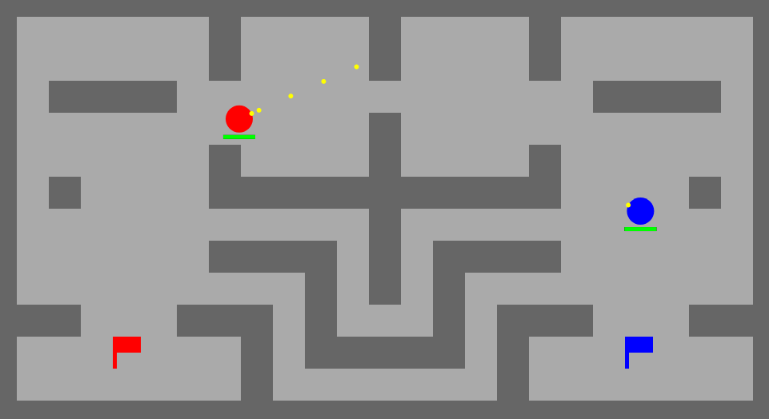

This is a small game that I made where you attempt to capture the flag of the
other player. I made this when I was bored in class and I am kind of happy
with how it turned out. It is fairly buggy at times (you can noclip through
the walls if you try hard enough and there are some issues with player
control). The game's graphics aren't very good but dark gray blocks are walls,
brown blocks can be destroyed, and red blocks explode. If you lose all of your
health, you get sent back to your spawn point and if you were carrying the
opponent's flag then you drop it. If you lose your flag you can no longer
heal in the game. The first one to 5 flags captured wins. Move the blue
player with the arrow keys and shoot with the down arrow. Move the red
player with WASD and use S to shoot.
Download Source